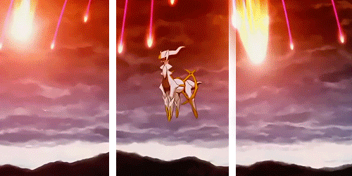
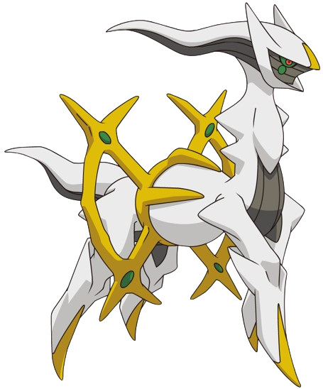
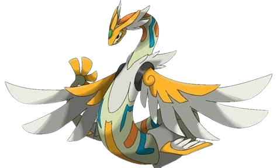

.jpeg)
MESTRE POKÉMON


Durante eras, acredita-se que o mundo foi criado por Arceus, o Deus Pokémon. No entanto, a Região de Lunac emerge para desafiar essa concepção, revelando uma história muito mais profunda e intrigante.
A LENDA DE LUNAC
De acordo com as ruínas nos antigos templos da Lua, um ser de luz desencadeou um poder tão grandioso que se manifestou como uma explosão cósmica, permeando todo o universo. Esse poder primordial deu origem a quatro seres míticos incumbidos de zelar pela origem da vida em um pequeno planeta entre as vastidões do cosmos. Arceus foi um desses Pokémon, contando com a ajuda de Mew, uma entidade brincalhona que detinha o DNA e a essência vital de todas as espécies do mundo. Além deles, surgiram Alogard, um ser magnífico de luz adornado com imponentes asas, e Magi, um pequeno guardião de pelos escuros e acinzentados, encarregado de guiar humanos e Pokémon para o pós-vida. À medida que a Terra prosperava, Alogard concedia inteligência às criaturas vivas, promovendo seu desenvolvimento, enquanto Arceus moldava rios e montanhas, dotando o mundo de vida e beleza. No entanto, a corrupção se insinuou entre humanos e Pokémon, e a escuridão ameaçou engolfar a Terra. O ser primordial ordenou suas criações a destruir o mundo corrompido, mas elas, em um ato de rebelião, optaram por protegê-lo, assumindo o papel de guardiões. Quando uma grande calamidade se abateu sobre a Terra na forma de um gigantesco meteoro, Arceus se lançou contra a ameaça, protegido por humanos e Pokémon. Diante de uma centelha de esperança, o ser primordial decidiu não intervir diretamente, mas deixou uma ordem para seus filhos: "Observem e, se notarem a mínima corrupção nesta espécie, destruam tudo". Arceus, após ser resgatado e protegido, confiou aos humanos a Joia da Alma, núcleo capaz de infundir vida na Terra. Com ela, os humanos regeneraram florestas, rios e toda a natureza. Contudo, o medo de que a Terra voltasse a perecer levou à traição e ao aprisionamento de Arceus nas profundezas da Terra. Liberto após um milênio, Arceus contemplou a destruição iminente, mas testemunhou também a bondade e a união em um treinador específico, que devolveu a Joia da Alma. Então, Arceus decidiu confiar novamente nos humanos, enquanto seu irmão Alogard, consumido pelo ódio à humanidade, permaneceu amargo e ressentido. Enquanto isso, Alogard, consumido pela amargura e desilusão, concebeu uma criatura devastadora, o Lervithan, destinado a consumir a Terra. Contudo, seu filho Alpha, dotado de amor e compaixão, reuniu coragem para desafiar seu criador. Com a ajuda de Kyogre e de uma jovem guardiã dos oceanos, Alpha selou o Lervithan em um ovo e o ocultou nas profundezas do mar. A ira de Alogard se voltou contra seu próprio filho, mas o amor de Alogard por sua criatura Alpha o impediu de retaliar. Em um ato de sacrifício supremo, Alogard fundiu sua alma com a de Alpha, aguardando o desenrolar natural dos acontecimentos. Alpha, por sua vez, selou seu corpo, sacrificando-se para dar origem à lendária Região de Lunac, onde ambos residem em harmonia. O povo de Lunac, ciente dessa história, aguarda com esperança o retorno de Alogard, clamando por perdão e misericórdia para um dia de paz e redenção. Lunac, uma região misteriosa e encantadora, é envolta em lendas e segredos há séculos. Suas paisagens exuberantes são marcadas por ruínas ancestrais e uma aura de magia que paira no ar. Acredita-se que os primeiros Pokémon tenham surgido sob a luz da lua neste lugar sagrado, onde o passado e o presente se entrelaçam em uma teia de mistério. Ao explorar os 20 distritos que compõem Lunac, os aventureiros descobrem uma variedade de criaturas incríveis e desafios emocionantes. Cada canto guarda uma história única e fascinante, convidando os exploradores a desvendar seus segredos ocultos. Em Lunac, a jornada é tão cativante quanto o destino, e aqueles que se aventuram por suas terras encontram experiências que transcendem o ordinário. Se você se sentiu fascinado por esta intrigante história e deseja explorar os mistérios da Região de Lunac, junte-se a nós nesta emocionante jornada! Prepare-se para descobrir segredos antigos, encontrar Pokémon lendários e desvendar os enigmas que cercam esse mundo misterioso. Estamos ansiosos para recebê-lo nesta aventura épica!